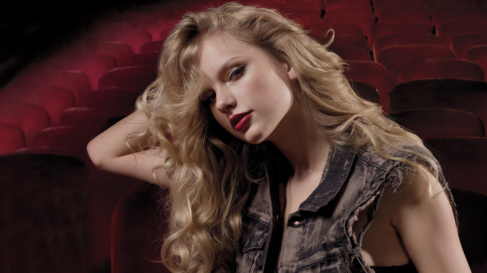

______________________________________________________________________________________________
Taylor Alison Swift is a multi-Grammy award-winning American singer/songwriter who, in 2010 at the age of 20, became
the youngest artist in history to win the Grammy Award for Album of the Year. In 2011 Swift was named Billboard's
Woman of the Year. She also has been named the American Music Awards Artist of the Year, as well as the Entertainer of
the Year for both the Country Music Association and the Academy of Country Music, among many other accolades. As of this writing, she is also the top-selling digital artist in music history.
Taylor Alison Swift was born on December 13, 1989, in Reading, Pennsylvania, to Andrea (Finlay), a one-time marketing executive, and Scott Kingsley Swift, a financial adviser. Her ancestry includes German and English, as well as some Scottish, Irish, Welsh and 1/16th Italian. She was named after James Taylor, and her mother believed that if she had a gender neutral name it would help her forge a business career. Taylor spent most of her childhood on an 11-acre Christmas tree farm in Montgomery County, Pennsylvania. When she was nine years old the family moved to Wyomissing, PA, where she attended West Reading Elementary Center and Wyomissing Area Junior/Senior High School. Taylor spent her summers at her parents' vacation home at the Jersey shore. Her first hobby was English horse riding. Her mother put her in a saddle when she was nine months old and Swift later competed in horse shows. At the age of nine she turned her attention to musical theatre and performed in Berks Youth Theatre Academy productions of "Grease", "Annie", "Bye Bye Birdie" and "The Sound of Music". She traveled regularly to New York City for vocal and acting lessons. However, after a few years of auditioning in New York and not getting anything, she became interested in country music. At age 11, after many attempts, Taylor won a local talent competition by singing a rendition of LeAnn Rimes' "Big Deal", and was given the opportunity to appear as the opening act for Charlie Daniels at a Strausstown amphitheater. This interest in country music isolated Swift from her middle school peers.
At age 12 she was shown by a computer repairman how to play three chords on a guitar, inspiring her to write her first song, "Lucky You". She had previously won a national poetry contest with a poem entitled "Monster in My Closet", but now began to focus on songwriting. She moved to Nashville at age 14, having secured an artist development deal with RCA Records. She left RCA Records when she was 15--the label wanted her to record the work of other songwriters and wait until she was 18 to release an album, but she felt ready to launch her career with her own material. At an industry showcase at Nashville's The Bluebird Café in 2005, Swift caught the attention of Scott Borchetta, a Dreamworks Records executive who was preparing to form his own independent record label, Big Machine Records. Taylor was one of the new label's first signings
Taylor released her debut album, "Taylor Swift", in October of 2006 and received generally positive reviews from music critics. The New York Times described it as "a small masterpiece of pop-minded country, both wide-eyed and cynical, held together by Ms. Swift's firm, pleading voice". Her single "Our Song" made her the youngest solo writer and singer of a #1 country song. The album sold 39,000 copies during its first week. In 2008 she released her second studio album, "Fearless". The lead single from the album, "Love Story", was released in September 2008 and became the second best-selling country single of all time, peaking at #4 on the Billboard Hot 100 chart. Four more singles were released throughout 2008 and 2009: "White Horse", "You Belong with Me", "Fifteen" and "Fearless". "You Belong with Me" was the album's highest-charting single, peaking at #2 on the Billboard Hot 100. The album debuted at #1 on the Billboard 200 Album Chart. It was the top-selling album of 2009 and brought Swift much crossover success.
She released her third studio album in October 2010, " Speak Now ", and wrote all the songs herself. She originally intended to call the album " Enchanted " but Scott Borchetta , her record label's CEO, felt the title did not reflect the album's more adult themes. Swift toured throughout 2011 and early 2012 in support of " Speak Now ". As part of the 13-month, 111-date world tour, Swift played seven shows in Asia, 12 in Europe, 80 in North America and 12 in Australasia (three dates on the US tour were rescheduled after she fell ill with bronchitis). The stage show was inspired by Broadway musical theatre, with choreographed routines, elaborate set-pieces, pyrotechnics and numerous costume changes. Swift invited many musicians to join her for one-off duets during the North American tour. Appearances were made by James Taylor, Jason Mraz, Shawn Colvin, Johnny Rzeznik, Andy Grammer, Tal Bachman, Justin Bieber, Selena Gomez, Nicki Minaj, Nelly, B.o.B., Usher, Flo Rida, T.I., Jon Foreman, Jim Adkins, Hayley Williams, Hot Chelle Rae, Ronnie Dunn, Darius Rucker, Tim McGraw and Kenny Chesney. In May 2012 Taylor featured in B.o.B's song "Both of Us". Swift's fourth studio album, "Red", was released on October 22, 2012. She wrote nine of the album's 16 songs alone; the remaining seven were co-written with Max Martin, Liz Rose, Dan Wilson, Ed Sheeran and Gary Lightbody. Nathan Chapman served as the album's lead producer but Jeff Bhasker, Butch Walker, Jacknife Lee, Dann Huff and Shellback (aka Shellback) also produced individual tracks. Chapman has said he encouraged Swift "to branch out and to test herself in other situations". She has described the collaborative process as "an apprenticeship" that taught her to "paint with different colors". " Red " examines Swift's attraction to drama-filled relationships; she believes that, since writing the record, such relationships no longer appeal to her. Musically, while there is some experimentation with "slick, electronic beats", the pop sheen is limited to a handful of tracks sprinkled among more recognizably Swiftian fare. "Rolling Stone" enjoyed "watching Swift find her pony-footing on Great Songwriter Mountain. She often succeeds in joining the Joni King tradition of stark-relief emotional mapping . . Her self-discovery project is one of the best stories in pop." The Guardian described Swift as a "Brünnhilde of a rock star" and characterized " Red " as "another chapter in one of the finest fantasies pop music has ever constructed". " USA Today " felt that the "engaging" record saw Swift "write ever-more convincingly--and wittily and painfully--about the messy emotions of a young twenty something nearing the end of her transition from girl to woman ". The "Los Angeles Times" noted the exploration of "more nuanced relationship issues" on "an unapologetically big pop record that opens new sonic vistas for her".